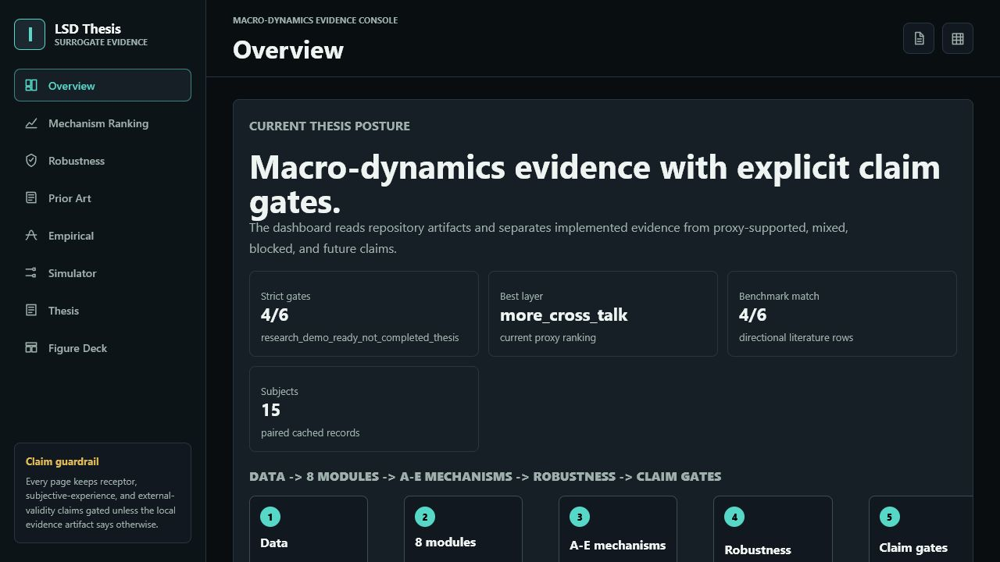
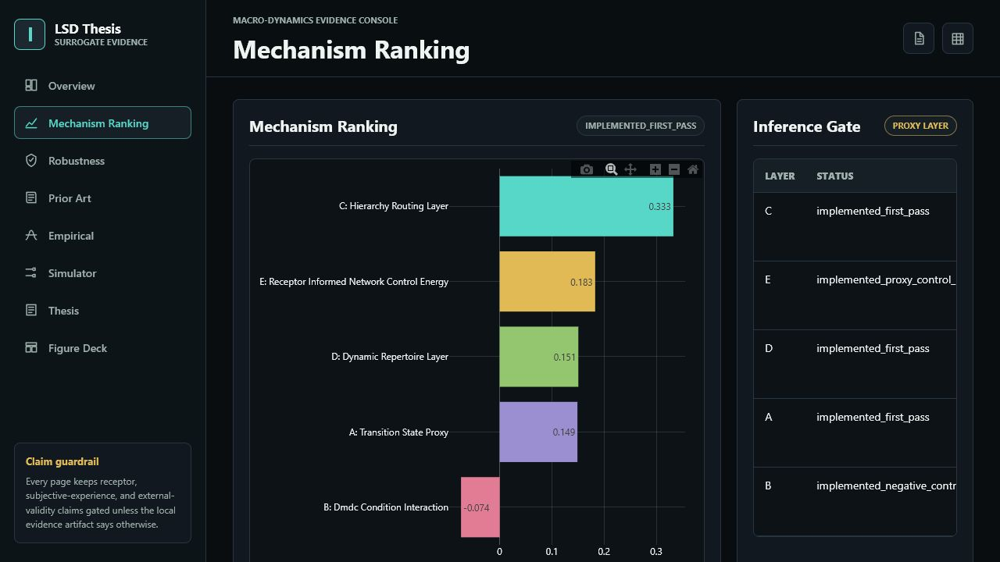
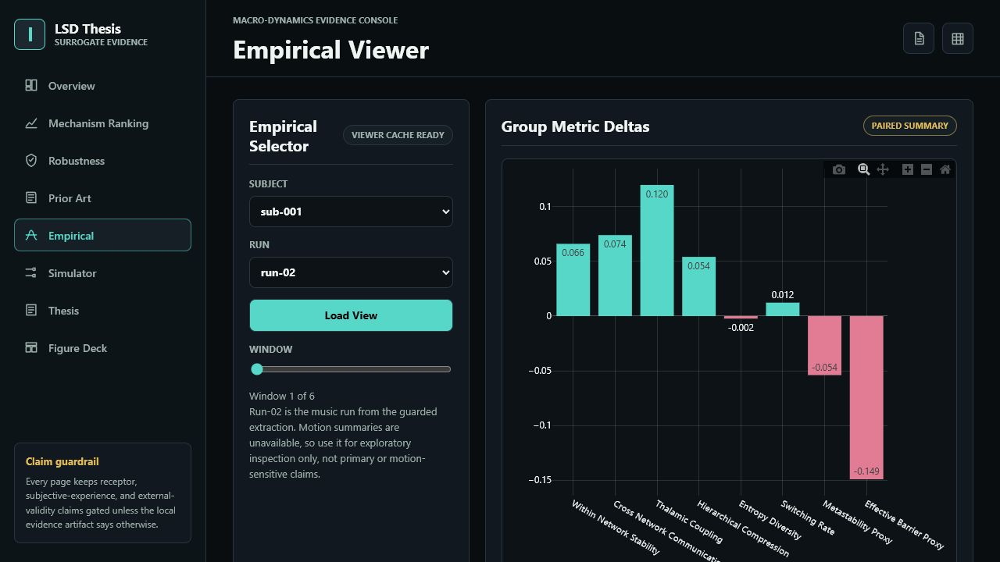
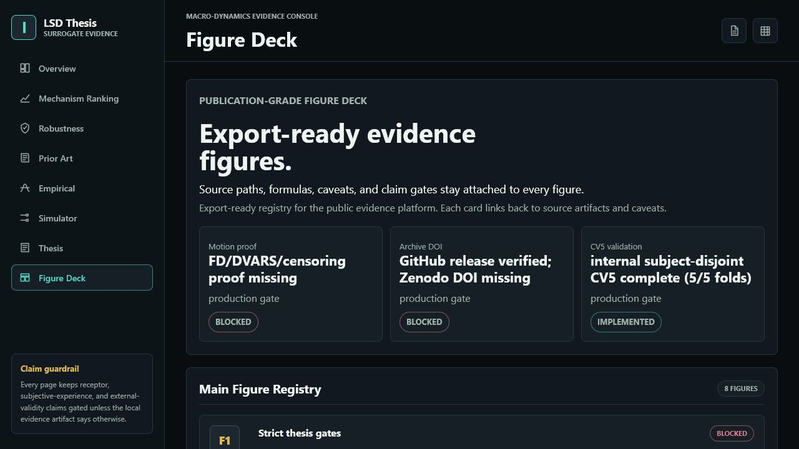

What I built
A Python/uv thesis workbench with an 8-module stochastic graph surrogate, paired LSD/placebo summaries, A-E ranking, robustness artifacts, dashboard screenshots, and prior-art inventory.
PI review snapshot - 2026-06-21 - hosted/static and offline-safe
A shareable supervisor pitch for a claim-gated macro-dynamic mechanism-ranking thesis workbench, with figures, units, slides, evidence tables, and blockers kept visible.
Start here
A Python/uv thesis workbench with an 8-module stochastic graph surrogate, paired LSD/placebo summaries, A-E ranking, robustness artifacts, dashboard screenshots, and prior-art inventory.
C has the highest current support score and strongest internal bootstrap rank-1 fraction. It remains a proxy until motion and sensitivity blockers are closed.
Make the next milestone a motion-proof planning pack before expanding the science scope to parcellation/null sensitivity or external validation.
Proposed Next Track
Close the FD/DVARS/censoring evidence gap before treating the C-layer result as thesis-central.
Keep E as a lower transition/control-energy proxy until stronger PET, map-prior, or spatial-null evidence changes the gate.
Use parcellation sensitivity and external-validation audit as the next scope only after the motion gate is documented.
Why this is a strong supervisor pitch
The work connects AI time-series benchmarking, control-theoretic priors, fMRI summary data, and psychedelic neuroscience in one reviewable pipeline.
The dashboard, static Pages build, artifact allowlist, validation baseline, and contract tests make the project inspectable instead of just visually impressive.
Negative baselines, mixed evidence, missing motion proof, and archive DOI blockers stay visible. The site does not turn a proxy into a biological claim.
Units first
Unitless proxy score used for A-E ranking. Higher means stronger current alignment with the empirical macro-dynamic target, not proof of mechanism.
Proportion from 0 to 1 across subject-bootstrap resamples. A value of 0.844 means 84.4% of resamples ranked that layer first.
Metric-native paired difference. Most dashboard values are unitless proxy metrics unless a source artifact defines a physical unit.
Dashboard tour

Posture, gates, readiness, ranking, and evidence flow.

A-E ranking with C leading and B retained as a negative baseline.

Bootstrap and sensitivity evidence for ranking stability.

Cached paired LSD/placebo run-01 and run-03 summaries.

ds003059 family inventory and claim boundaries.

Review figure registry with blockers visible.
Review route
{kind=link}
{kind=link}
{kind=link}
{kind=link}